A evolução da estética Gótica, Grunge e Avant-Garde no Design Digital
O Gótico e o Underground nunca foram sobre seguir regras de mercado. São movimentos de ruptura, expressão e profundidade. Porém, existe um problema real quando marcas independentes, bandas e artistas tentam levar essa estética para o digital: a linha tênue entre o "cru" (raw) e o "amador".
Muitos criadores confundem a estética Lo-Fi e suja do punk com falta de técnica. O resultado? Uma identidade visual que não honra a qualidade da arte que está sendo vendida.
Porém, existe um desafio latente para artistas, músicos, marcas de streetwear e estúdios que vivem essa cultura: como levar a "sujeira" e a rebeldia do mundo físico para as telas limpas dos smartphones sem parecer amador?
O Dark Branding surge exatamente nessa lacuna. Não se trata de limpar a identidade para torná-la comercial, mas sim de usar fundamentos sólidos de design para amplificar a mensagem do artista. É a diferença entre um ruído que incomoda e uma distorção perfeitamente equalizada.
A Profundidade do escuro (Ou por que o preto absoluto é um erro)
Na psicologia das cores aplicada ao digital, o escuro representa o desconhecido e o exclusivo. Mas há um equívoco técnico que muitos cometem ao tentar replicar essa atmosfera: o uso do preto puro (#000000).
No design de alta performance, o verdadeiro "dark" é construído através de camadas. A estética Avant-Garde e o design futurista utilizam tons de chumbo, asfalto e azul noturno para criar volumetria. O preto chapado achata a mensagem; o "Off-Black" cria um palco para que a luz brilhe.
É essa nuance que separa uma estética sombria sofisticada de uma imagem que apenas parece mal iluminada. O escuro precisa ser rico para sustentar elementos metálicos, cromados e texturas complexas.
A Rebelião da Textura: O Renascimento do Grunge
Vivemos anos saturados pelo minimalismo corporativo e pelo design plano (Flat Design). Como resposta, o inconsciente coletivo buscou refúgio no tátil. O retorno do Grunge e a ascensão da Colagem Digital não são coincidências — são uma necessidade de sentir a "mão humana" por trás da tela.
No branding para nichos alternativos, a perfeição é inimiga da conexão. Rasgos de papel, ruído granulado (grain), falhas de scanner e texturas de xerox trazem autenticidade.
Essa estética comunica que aquela marca ou artista possui história, cicatrizes e vivência. É o visual "lo-fi" tratado com o respeito de uma obra de arte. A colagem permite narrativas não-lineares, onde o caos visual é curado para guiar o olhar, e não para confundi-lo.

Tipografia como Grito: Do Gótico ao Cyber Sigilism
As letras no universo dark deixaram de ser apenas funcionais para se tornarem amuletos visuais. Enquanto a tipografia suíça busca clareza, a tipografia do Dark Branding busca impacto e emoção.
Estamos observando uma fusão fascinante: a tradição da caligrafia gótica (Blackletter) encontrando a agressividade digital do Cyber Sigilism e do Metalheart.
São formas pontiagudas, orgânicas e muitas vezes ilegíveis propositalmente. No contexto da moda e da arte, essa "dificuldade" de leitura é um filtro: ela atrai quem entende o código cultural e afasta quem busca o óbvio. A tipografia torna-se, assim, parte da estampa, do cenário e da própria arquitetura da marca.

Psicodelia Noturna: O contraste do Acid Goth
Existe um mito de que o universo sombrio deve ser monocromático. Pelo contrário, a escuridão é o melhor cenário para a saturação extrema.
A vertente Acid Goth explora justamente esse contraste: o uso de cores neon, magentas vibrantes, verdes tóxicos e cromados sobre bases escuras. É a estética da rave, do misticismo moderno e do tarot contemporâneo.
Ao introduzir cor com inteligência, quebra-se a monotonia e cria-se pontos focais hipnóticos. O místico não precisa ser antigo ou empoeirado; ele pode ser elétrico e vibrante.

Minimalismo Sombrio: O luxo do silêncio
Por fim, o espectro do design dark também abraça o silêncio. O minimalismo sombrio é sobre a ausência de excessos para dar protagonismo à matéria-prima.
Seja na capa de um álbum, na interface de um site ou numa embalagem, o uso inteligente do espaço negativo transmite confiança. Quem tem autoridade não precisa gritar visualmente o tempo todo. O Dark Branding bem executado sabe a hora de ser caótico (grunge) e a hora de ser silencioso (minimalista).
Adotar uma identidade visual sombria é um compromisso com a verdade da sua arte. Não se trata de seguir uma tendência passageira do TikTok, mas de encontrar a linguagem visual que honra a complexidade do seu trabalho.
Seja através da sujeira estética do grunge ou do futurismo polido do metal, o design deve elevar a percepção do público sobre o que é o underground.
O seu visual está à altura da sua Mensagem?
Para discussões visuais e estudos de caso aprofundados, acompanhe o estúdio criativo no Instagram @mazuldesign.